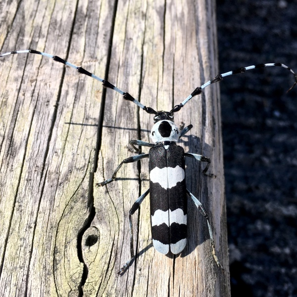

Rosalia funebris
- Common name
- Banded Alder Borer
- Family
- Cerambycidae
- Family common name
- Long-horned beetles
- Commonly observed
- June to September
- Size
- Up to 3.8 cm
- Distribution
- Found on the bark of alder trees
- Food
- Most mature Cerambycidae feed on flowers. The larvae consume wood. Rosalia funebris generally lays its eggs on downed trees rather than living trees, so it is not considered a significant pest.
- Sound
- When handled or threatened R. funebris makes an audible noise similar to that of a squeaky running shoe, or a hissing sound much like air being let out of a bike tire.
Range Map
Seasonality